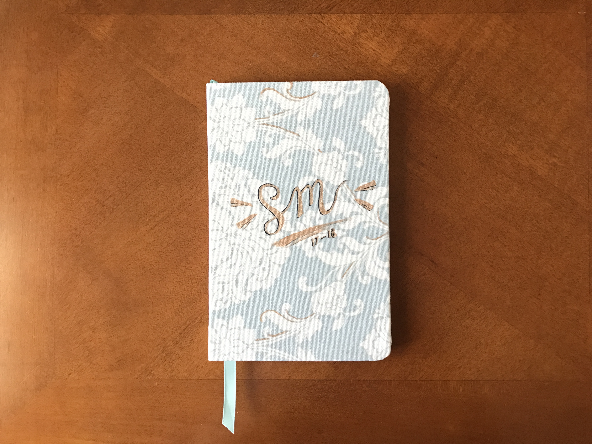

august 7, 2017
august 7, 2017 
planner
Those who know me might know that I created a planner at the start of 2017, in which I designed all the pages and had it printed at blurb.com. I loved it at first and used it for a while, but eventually strayed from doing so. I came to dislike the design and the requirement for so many details (even though I'd thought I wanted that!).
So I took on the ambition of trying again! This time with a redesign, and binding the book myself to have more freedom with the page design, quality, and details that blurb.com restricted me from. It's not perfect, but if I do say so myself, I think it turned out pretty well! We'll have to wait and see if I keep up with it. But here's a little lowdown of how I put it together:
Design the pages.
I started out by writing down what I wanted to include, and then making a rough sketch of what I wanted to do (though it eventually strayed from my original vision). Because I don't own Photoshop (nor have the desire to purchase it), I used Inkscape which is another free image editing/design program. Once I got the design down, it was just a lot of time to complete pages for an entire year (= motivation to keep it simple). Then, laying them out appropriately and putting them all together using Microsoft Publisher.

Print the pages.
I had my pages printed at Staples to get it on nicer quality paper than I have on hand at home, and with better printing quality than my home printers could produce.
Fold and arrange the pages.
I folded all the pages in half to achieve a ~ 5 x 8 inch sized planner that I prefer. I decided on signatures of 4 pages each (groups of 4 pages folded together) and arranged the pages accordingly. Obviously, this took some foresight when arranging the pages to be printed.
Stitch the pages together.
I followed "Sea Lemon"'s instructions on creating the text block (here) with some thread that I waxed with beeswax, then used fabric/paper glue to better hold together the stitched edge.
Round the corners of the pages.
Just for a little touch of "professional"!
Prep the cover.
I bought some fabric and metallic paint for the cover, and ribbon for the page holder, and painted the basic design I wanted on the cover.

Put together the cover.
I took some cardboard off old notebooks around the house to create the front and back covers, and some cardstock for the spine, and glued them onto the fabric.
Add finishing touches!
Once I glued the textblock into the cover, I added some touches to the cover design, and added some metallic embellishments to the fabric design on the front and back.